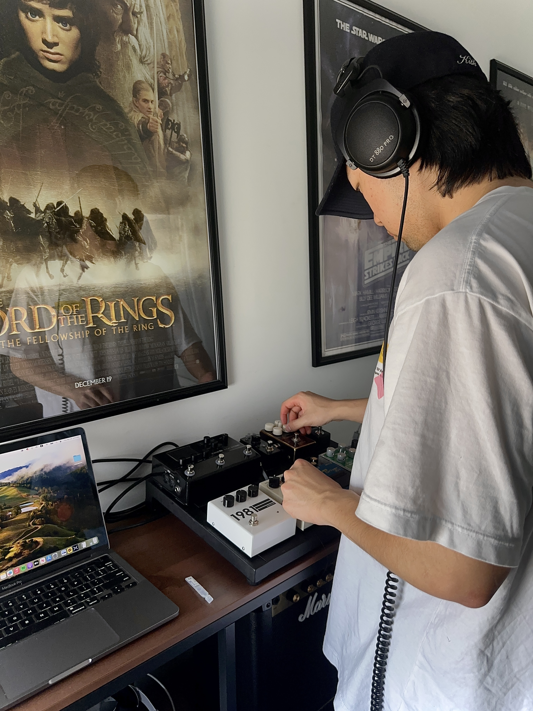
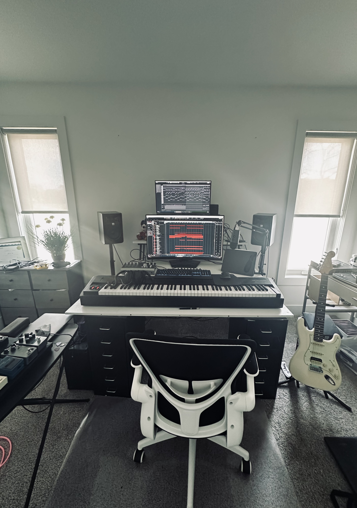

I’m a film, animation, and video game composer specializing in orchestral and ambient music. Music has always been my passion, and over the years, I’ve honed my composition and audio engineering skills to craft immersive, emotionally compelling soundscapes.
My work includes scoring for indie films, sound redesign, and foley recording. Whether it’s a grand orchestral score or subtle ambient textures, I aim to enhance narratives with music that resonates with audiences.